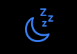
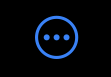
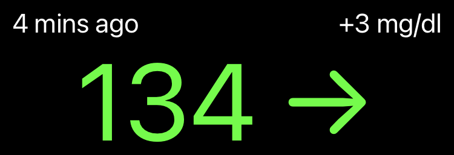
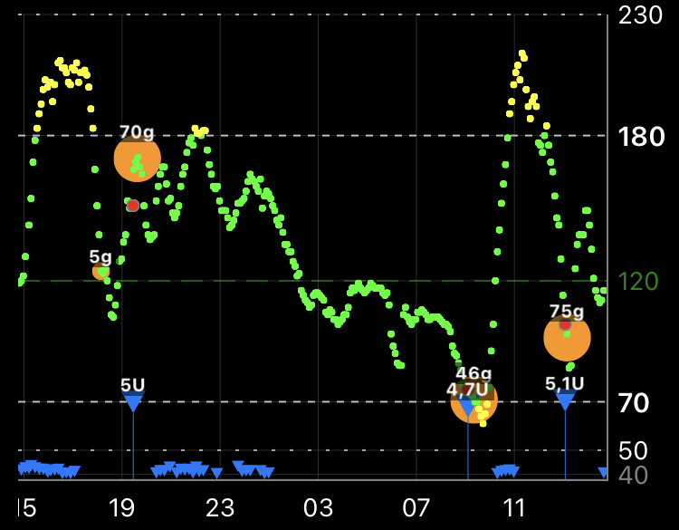
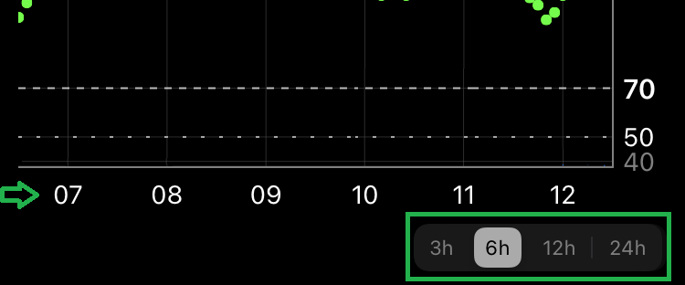
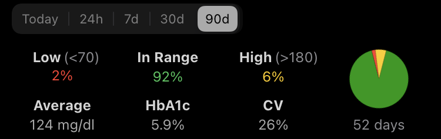
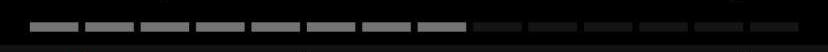

Home Screen⌁
At the top of the view you will find shortcut icons:
 Snooze an alarm
 Display the sensor current status
Calibrate your sensor
Lock the display
Online help
Just below you'll see the current BG value and how long ago it was received by xDrip4iOS.
On the right, the delta value refers to the difference between last and current measurement.
The trend arrow is based on this delta value: it will not match Dexcom arrows (different calculation).

The central part is used by the graphical display, you can customize it as explained here.
You will also see treatments if you added them or received them from Nightscout.

You can also change the time scale from 3 to 24 hours.

Below the graph you'll see your BG statistics. They are defined using your objective values.
You can display them on a timeframe ranging from one day (Today) to last 90 days.
You can change HbA1c from % to mmol/l in your settings.
You'll find more about these indicators here.
The pie chart is based on data present in xDrip4iOS (number of days below).

If you're using your phone in master mode, you will then see the sensor lifetime progress bar.

You can set it to either increase (used days) or decrease (remaining days).